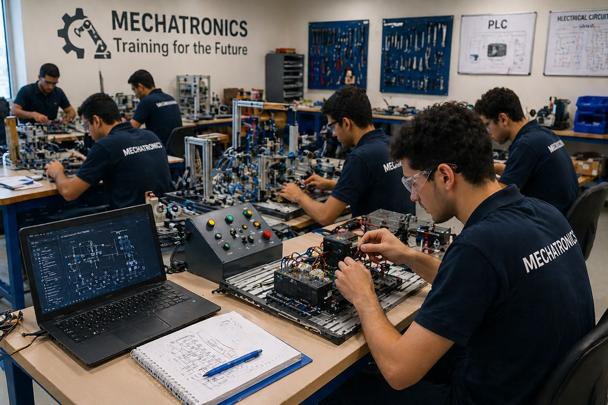

Mechatronics training is considered one of the most important stages in the educational journey of students because it helps them
transform theoretical knowledge into practical experience.
Mechatronics is a modern engineering field that combines mechanical engineering, electronics, computer programming, robotics,
and control systems.
This combination makes it one of the most advanced and useful specializations in industry today.
During the training period, students are introduced to real industrial environments where they can observe and participate
in different engineering processes.
They learn how to operate machines, maintain automated systems, program controllers, and diagnose technical faults.
In addition, they gain hands-on experience with sensors, motors, pneumatic systems, hydraulic systems, and industrial robots.
These experiences help students understand how different systems work together efficiently.
Training also improves many personal and professional skills. Students learn teamwork, communication, leadership, problem-solving,
and time management.
They also become more confident in dealing with challenges and making decisions under pressure.
Furthermore, training allows students to follow safety rules and understand the importance of
discipline in the workplace.
Another important benefit of mechatronics training is preparing students for the job market.
Many companies today need engineers who have both technical knowledge and practical experience.
Therefore, training increases employment opportunities and helps students build a strong future career.
In conclusion, mechatronics training is an essential step in preparing skilled engineers who can contribute to
industrial development and technological progress. to know more about our content visit the upcoming link .
Go to https://en.wikipedia.org/wiki/Mechatronics

Mechatronics engineering is a multidisciplinary field that combines mechanics, electronics, computer science, and control engineering. It plays a major role in modern industries such as robotics, automation, and smart systems.
The term "mechatronics" was first introduced in the late 20th century to describe the integration of mechanical systems with electronics and intelligent control. Over time, this field has evolved significantly with the development of modern technologies.
Today, mechatronics is considered a key part of advanced engineering, especially with the rise of automation and digital transformation.
A mechatronic system is typically made up of several main components including sensors, actuators, microcontrollers, and software systems.
Mechatronics has transformed the way industries operate by introducing automation and intelligent systems. It reduces human effort and increases production accuracy and speed.
Many factories now rely on automated machines that can work continuously with minimal supervision.
Despite its advantages, mechatronics also faces some challenges such as system complexity, high cost of development, and the need for skilled engineers.
Engineers must continuously learn new technologies to keep up with rapid advancements in this field.
Mechatronics is not just a field of study, but a gateway to innovation and future technologies. It allows engineers to build systems that can think, act, and adapt to different situations.
A mechatronics student gains strong technical and analytical skills, including programming, circuit design, mechanical design, and problem solving.
The future of mechatronics is rapidly growing with the advancement of artificial intelligence, robotics, and automation technologies.
Mechatronics plays a crucial role in improving efficiency and productivity in modern industries. It helps in designing smart machines that can perform tasks with high precision and minimal human intervention.
Many industries depend on mechatronics systems such as manufacturing, automotive, healthcare, and aerospace engineering.
Mechatronics engineers use a variety of tools and technologies such as microcontrollers, sensors, actuators, and software programming tools.
Common programming languages include C, C++, and Python, which are used to control systems and develop intelligent solutions.
Mechatronics is an exciting field for students who are interested in combining mechanical and electronic systems with programming.
It opens the door to many career opportunities and allows engineers to work on innovative and advanced technologies.
In conclusion, mechatronics engineering is one of the most important and rapidly developing engineering fields. It combines different disciplines to create smart and efficient systems that improve our daily lives.